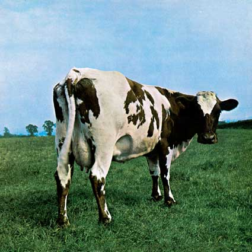
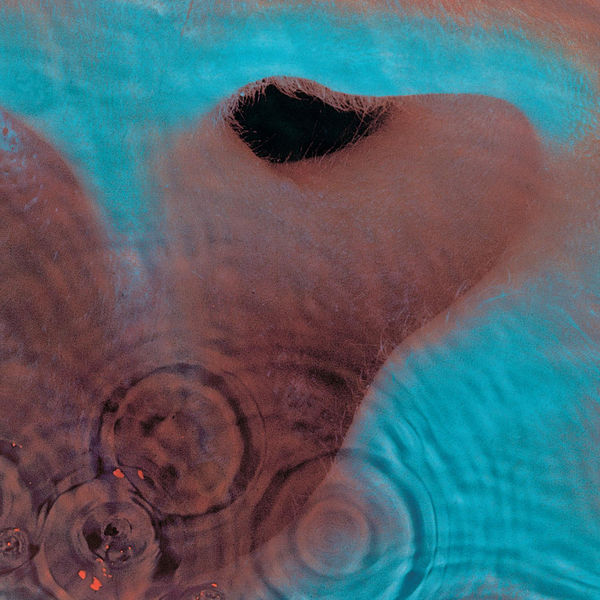

The Piper at the Gates of Dawn (1967)
- Astronomy Domine
- Lucifer Sam
- Matilda Mother
- Flaming
- Pow R. Toc H.
- Take Up Thy Stethoscope and Walk
- Interstellar Overdrive
- The Gnome
- Chapter 24
- The Scarecrow
- Bike
- Let There Be More Light
- Remember a Day
- Set the Controls for the Heart of the Sun
- Corporal Clegg
- A Saucerful of Secrets
- See-Saw
- Jugband Blues

Music from the Film More (1969)
- Cirrus Minor
- The Nile Song
- Crying Song
- Up the Khyber
- Green is the Colour
- Cymbaline
- Party Sequence
- Main Theme
- Ibiza Bar
- More Blues
- Quicksilver
- A Spanish Piece
- Dramatic Theme
- Astronomy Domine
- Careful with That Axe, Eugene
- Set the Controls for the Heart of the Sun
- A Saucerful of Secrets
- Sysyphus: Part 1
- Sysyphus: Part 2
- Sysyphus: Part 3
- Sysyphus: Part 4
- Grantchester Meadows
- Several Species of Small Furry Animals Gathered Together in a Cave and Grooving with a Pict
- The Narrow Way Part 1
- The Narrow Way Part 2
- The Narrow Way Part 3
- The Grand Vizier’s Garden Party: Part 1 (Entrance)
- The Grand Vizier’s Garden Party: Part 2 (Entertainment)
- The Grand Vizier’s Garden Party: Part 3 (Exit)

- Atom Heart Mother
- Father’s Shout
- Breast Milky
- Mother Fore
- Funky Dung
- Mind Your Throats Please
- Remergence
- If
- Summer ’68
- Fat Old Sun
- Alan’s Psychedelic Breakfast
- Rise and Shine
- Sunny Side Up
- Morning Glory

- One of These Days
- A Pillow of Winds
- Fearless (including You'll Never Walk Alone)
- San Tropez
- Seamus
- Echoes

- Obscured by Clouds
- When You're In
- Burning Bridges
- The Gold It's in the...
- Wot's... Uh the Deal?
- Mudmen
- Childhood's End
- Free Four
- Stay
- Absolutely Curtains

The Dark Side of the Moon (1973)
- Speak to Me
- Breathe (In the Air)
- On the Run
- Time
- The Great Gig in the Sky
- Money
- Us and Them
- Any Colour You Like
- Brain Damage
- Eclipse

- Shine On You Crazy Diamond (Parts I–V)
- Welcome to the Machine
- Have a Cigar (featuring Roy Harper)
- Wish You Were Here
- Shine On You Crazy Diamond (Parts VI–IX)

- Pigs on the Wing (Part One)
- Dogs
- Pigs (Three Different Ones)
- Sheep
- Pigs on the Wing (Part Two)

- In the Flesh?
- The Thin Ice
- Another Brick in the Wall, part 1
- The Happiest Days of Our Lives
- Another Brick in the Wall, part 2
- Mother
- Goodbye Blue Sky
- Empty Spaces
- Young Lust
- One of My Turns
- Don't Leave Me Now
- Another Brick in the Wall, part 3
- Goodbye Cruel World
- Hey You
- Is There Anybody Out There?
- Nobody Home
- Vera
- Bring the Boys Back Home
- Comfortably Numb
- The Show Must Go On
- In the Flesh
- Run Like Hell
- Waiting for the Worms
- Stop
- The Trial
- Outside the Wall

- The Post War Dream
- Your Possible Pasts
- One of the Few
- The Hero's Return
- The Gunner's Dream
- Paranoid Eyes
- Get Your Filthy Hands Off My Desert
- The Fletcher Memorial Home
- Southampton Dock
- The Final Cut
- Not Now John
- Two Suns in the Sunset

A Momentary Lapse of Reason (1987)
- Signs of Life
- Learning to Fly
- The Dogs of War
- One Slip
- On the Turning Away
- Yet Another Movie
- Round and Around (instrumental)
- A New Machine (part 1)
- Terminal Frost (instrumental)
- A New Machine (part 2)
- Sorrow

- Cluster One
- What Do You Want from Me
- Poles Apart
- Marooned
- A Great Day for Freedom
- Wearing the Inside Out
- Take It Back
- Coming Back to Life
- Keep Talking
- Lost for Words
- High Hopes

- Things Left Unsaid
- It's What We Do
- Ebb and Flow
- Sum
- Skins
- Unsung
- Anisina
- The Lost Art of Conversation
- On Noodle Street
- Night Light
- Allons-y (1)
- Autumn '68
- Allons-y (2)
- Talkin' Hawkin'
- Calling
- Eyes to Pearls
- Surfacing
- Louder than Words